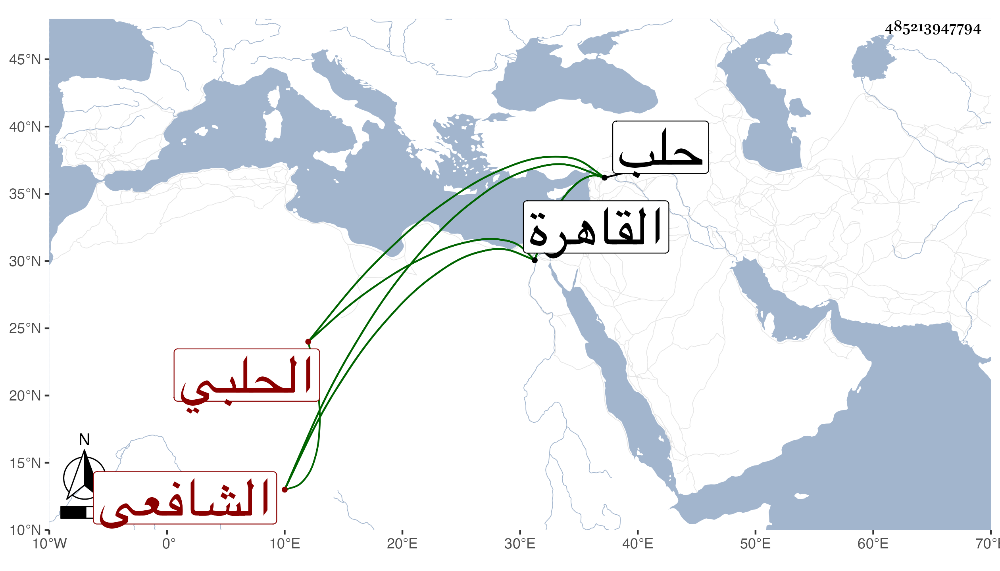

0902Sakhawi.DawLamic.ITO20230111-ara1.EIS1600.485213947794
Biography ID: 485213947794
1175
يوسف بن أبي بكر بن علي بن محمد بن عبد الله بن أحمد بن يوسف الجمال بن التقي الحلبي الشافعي ويعرف بابن الخشاب وبسبط ابن الوردي فأمه خديجة ابنة العلاء علي بن محمد بن عبد الخالق بن أحمد قريب الزين بن الوردي من جهة أنه جد أبي العلاء لأمه وحفيد عم جده عبد الخالق . ولد في خامس عشرى شوال سنة سبع وستين وثمانمائة بحلب ونشأ بها فحفظ البهجة والكافية والشاطبية وأخذ في الفقه عن الفخر عثمان الكردي وفي العربية عن علي الخوارزمي المدعو بقول درويش وعلي بن محمد الشرابي الكردي ، وخطبه أمير سلاح تمراز حين كان بحلب في التجريدة ليكون إمامه فأم به من مستهل جمادى الأولى سنة إحدى وتسعين واغتبط به أتم اغتباط بحيث استصحبه معه إلى القاهرة مستمرا على وظيفته ثم عاد معه إلى التجريدة أيضا في ثاني عشرى جمادى الثانية سنة ثلاث وتسعين فلم يلبث أن تغير عنه في سنة أربع لمزيد نصحه في ضبط ديوانه بحيث ثقل ذلك على الآكلين فوشوا به عنده إلى أن تعدى وضربه مرارا واختفى إلى أن توسل بمن تكلم له في موادعته له حين السفر في سنة خمس للتجريدة أيضا وتخلف هو بالقاهرة فاستدعى به السلطان واستخبره عن الأمور وعن الديوان وكتب له شيئا مع تصنيفي رفع الشكوك في مفاخر الملوك فأنعم عليه بمائة دينار وأمره بأن يكون سنبل مبلغا عنه كل ما يحتاج إليه ولما قدمت التجريدة تقلل من الاجتماع بالناس مطلقا وكان قبل ذلك اجتمع بي وأخذ عني المؤلف المشار إليه والتوجه للرب بدعوات الكرب وسمع مني أشياء كالمسلسل وغيره ومن ذلك الفرج بعد الشدة لابن أبي الدنيا وكذا تكرر اجتماعه بي وأخذ عن البرهان بن أبي شريف والزين زكريا وغيرهما . وهو إنسان مهذب عاقل حسن الخط بديع اللطف مع إلمام بالفضل .
